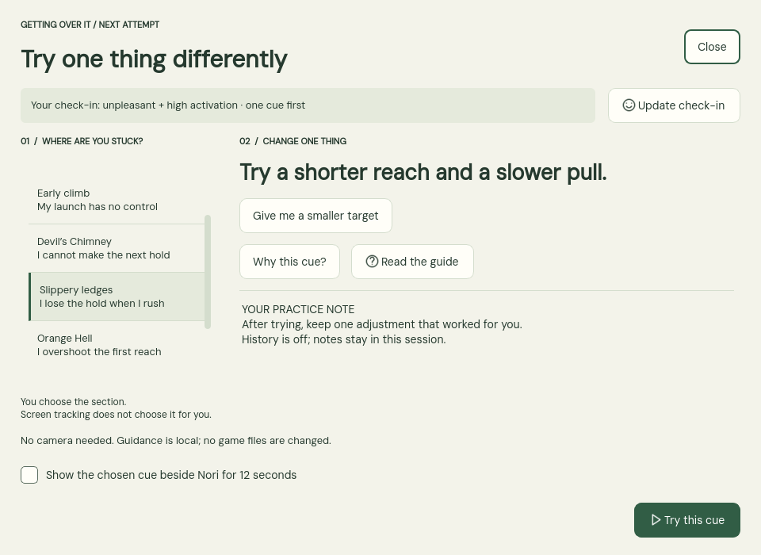
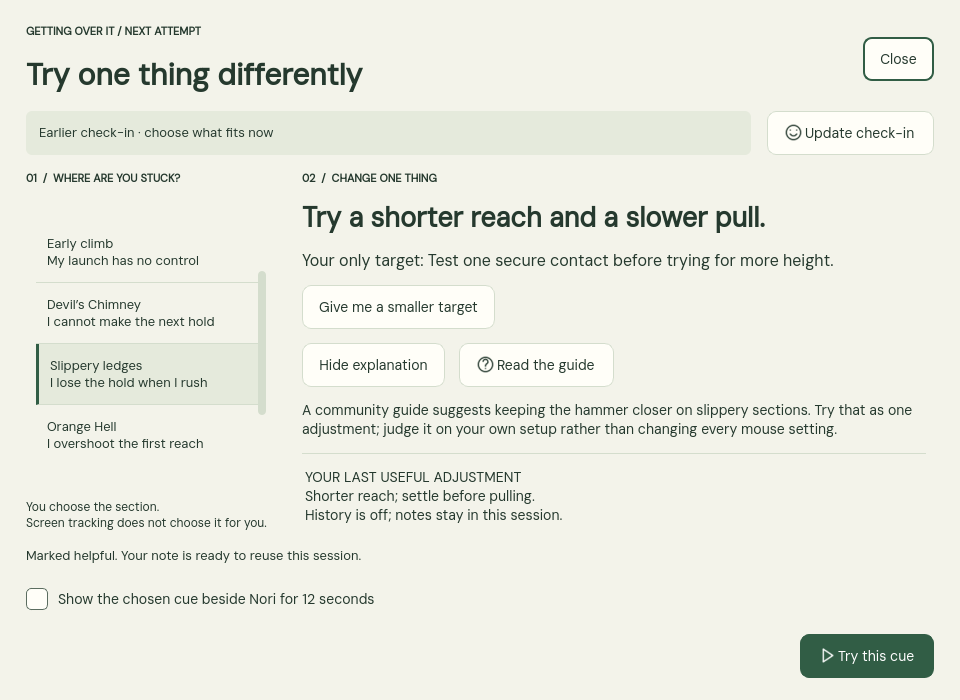

Challenge can be the point
Getting Over It is built around difficult climbs and lost progress. Removing every struggle misses the attraction.

Interaction design / Gaming
Check in. Try one change.
Keep what helps.
The project
Regen pairs a player’s CMA check-in with optional practice help. One cue, a smaller target, or a break. The player chooses.
01 / Empathize
A player can laugh at a setback, get angry, or enjoy the challenge.
A face and a failed attempt don’t tell the whole story.
Getting Over It is built around difficult climbs and lost progress. Removing every struggle misses the attraction.
A brow or a smile can mean different things. The player’s check-in supplies the CMA coordinates.
A cue can interrupt or spoil a discovery. Let the player request it and decide whether it helped.
Five fictional personas. Three Indian contexts.
Needs a way back to the next round after teammate conflict.
Needs control over labels, camera use and who sees them.
Wants one useful takeaway from a short session.
Wants a hint without losing the discovery.
Needs a way to separate performance from personal experience.
02 / Define
When I keep missing a difficult section but still want the challenge, help me choose one adjustment without taking over my play.
The goal is player agency. Reduced anger, better performance and wellbeing are still untested outcomes.
03 / Ideate
A launcher adds another library. A venue platform adds a business.
Regen stays with one player and one next choice.
Choose a feeling.
Adjust both dimensions.
Pick the problem.
Choose the amount of help.
Go back to the game.
The cue stays stable.
Helped or still stuck?
Save a note if useful.
Layout plan for this revision. Camera controls and the check-in stay in view; diagnostics sit behind the main task.
04 / Prototype

Less hunting
Check in, get a cue and recap have a clear place.
Less clutter
One main companion surface. Camera is optional.
Clear sources
Face estimates and your reported feeling stay separate.
The framework, working
CMA describes pleasantness and activation.
Try a check-in and see how the interaction changes.
Interactive example / Your check-in
One change for the next attempt.
The example uses your selected check-in, not camera analysis.
Unpleasant + high activation
One short cue first.
Unpleasant + low activation
A smaller practice target.
Mixed, missing or other
Choose the amount of help.
The rules and five-minute check-in expiry are prototype choices to test. CMA does not prescribe them. This example is local and does not analyse a camera.
The face of Regen
One character, soft features and smooth changes.
43 authored check-in looks. A smaller, uncertain set of camera estimates.
Neutral stays neutral
A flat mouth. No pretend smile when tracking is missing.
Expressions have detail
Curved brows, eyes, mouth, visible teeth and hand cues.
Movement has a purpose
Subtle transitions keep the same character recognisable.
Practice, then reflect
Choose the section. Try the adjustment.
Rate it, and keep a note worth using again.


System / Service / Product
A frameless, click-through companion keeps the cue nearby. The paired phone gives it a separate screen.
Try a shorter reach
and a slower pull.
The laptop does the analysis. The phone receives derived state over trusted Wi-Fi. No face or game images are sent.
Open a sample session recap
Brand and visual language
From the gaming idea of regeneration.
A fresh attempt, with the player still in control.
Nori is the character. Regen is the app.

Feasibility
Native app, CMA-adjusted cues, player feedback, consented notes and PDF export.
Physical camera, actual game events, Wi-Fi, frame-rate impact and whether help earns its interruption.
No venue bookings, whole-game understanding or automatic recognition of 43 felt emotions.
Codex / Python / PySide6 / QPainter / MediaPipe / HSE / Playwright / Chromium / GitHub / Image generation
The process moves through Empathize, Define, Ideate and Prototype. Player input and local AI support a practice service. Its intended human benefit is agency during difficult play.
Research is secondary. The five personas are fictional. App screens use scripted demonstration inputs. The papercraft world is generated brand artwork; Nori and the app are native vector work.
Existing local result: 113 passed, five skipped. The latest review checks and their scope are linked below. No actual player study or in-game recognition accuracy is claimed.
The four supplied Behance pages were blocked. Their detailed layouts were not inspected or copied. This design review does not publish an OTA.